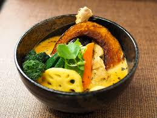
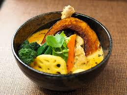
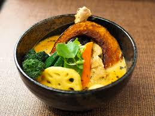

スープカレーとジンギスカン
 

札幌の名物料理「スープカレー」と「ジンギスカン」。スパイシーなスープにゴロゴロ野菜のスープカレーと、ラム肉と野菜をジューシーに焼き上げるジンギスカンは、どちらも北海道を代表するグルメです。旅の思い出に、ぜひ本場で味わってみてください。

札幌の名物料理「スープカレー」と「ジンギスカン」。スパイシーなスープにゴロゴロ野菜のスープカレーと、ラム肉と野菜をジューシーに焼き上げるジンギスカンは、どちらも北海道を代表するグルメです。旅の思い出に、ぜひ本場で味わってみてください。